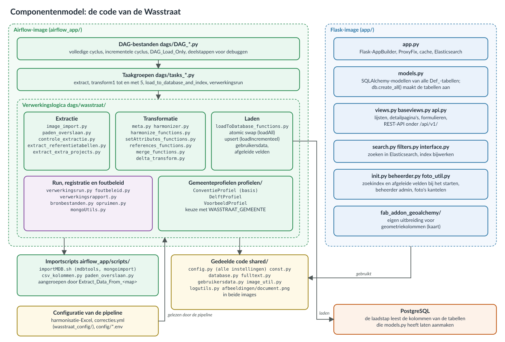

Componentenmodel¶
Deze pagina beschrijft de code van de Wasstraat per onderdeel: welke map wat doet en hoe de onderdelen van elkaar afhangen. De samenhang van de services staat in Systeemarchitectuur, het verloop van een run in Verwerkingspipeline.

Overzicht¶
| Map | Onderdeel | Draait in |
|---|---|---|
airflow_app/dags/ |
DAG-definities en taakgroepen | Airflow |
airflow_app/dags/wasstraat/ |
Verwerkingslogica van de pipeline | Airflow (en Jupyter) |
airflow_app/dags/wasstraat/profielen/ |
Gemeenteprofielen | Airflow |
airflow_app/scripts/ |
Import van Access-databases (importMDB.sh en hulpscripts) |
Airflow |
shared/ |
Configuratie, constanten en hulpcode voor Airflow en Flask | Airflow (als dags/shared) en Flask (als app/shared) |
app/app/ |
Webapplicatie: modellen, views, API, zoeken | Flask |
app/fab_addon_geoalchemy/ |
Eigen uitbreiding van Flask-AppBuilder voor geometriekolommen | Flask |
services/ |
Dockerfiles, requirements.txt en constraints.txt per image, Apache-configuratie |
Build |
scripts/ |
Entrypoints van Airflow en Flask, het initialisatiescript van PostgreSQL, make constraints, make migrate-postgres-data |
Build en beheer |
deploy/ |
Live installatie uit de gepubliceerde images | Gebruikers |
data/*/wasstraat_config/ |
Harmonisatie-Excel en correcties.yml per omgeving |
Airflow |
tests/ |
Unit- en integratietests | Ontwikkelomgeving |
Pipeline (airflow_app/dags/)¶
De DAG-bestanden (DAG_<naam>.py) zetten taakgroepen achter elkaar; de taakgroepen staan in tasks_<actie>_<onderwerp>.py en roepen functies uit wasstraat/ aan.
| Bestand | Inhoud |
|---|---|
DAG_Extract_Transform_Load_Full_Cycle.py, DAG_Extract_Transform_Load_Incremental.py, DAG_Load_Only.py |
De twee cycli en het afzonderlijke laden, met run-document en rapport |
Overige DAG_*.py |
Deelstappen voor debuggen (zie Verwerkingspipeline) |
tasks_extract.py |
Taakgroep Extract_Group |
tasks_transform1_harmonize.py tot en met tasks_transform5_moveAndMerge.py |
De taakgroepen van de transformatie |
tasks_load_to_database_and_index.py |
Taakgroep Load_To_Database_And_Inxdex_Group |
tasks_verwerkingsrun.py |
Start_Run, Markeer_Run_Mislukt, Rond_Run_Af, Verwerkingsrapport en de standaardargumenten (met de on_failure_callback) |
Modules in wasstraat/:
| Module | Verantwoordelijkheid |
|---|---|
meta.py |
Het datamodel van de pipeline: per soort de staging-collectie, de harmonisatie (naam in de Excel of een vaste pipeline), de sleutelpipelines, verplaatsen of samenvoegen, en de pipelines voor ontbrekende entiteiten |
harmonizer.py |
Leest de harmonisatie-Excel en bouwt er per soort een MongoDB-aggregatie van |
harmonize_functions.py |
Transform 1: laadCorrecties (correcties.yml), fixProjectNames (brondata-correcties), fixMonsterProjectcds, de harmonisatie per soort en parseFotobestanden |
setAttributes_functions.py |
Transform 2: projectcode-correcties, identificatie via het gemeenteprofiel, dateringen, conversies, coördinaten; de drempel op verwerkingsfouten |
references_functions.py |
Transform 3 en 4: sleutels (setReferenceKeys), unieke vondstnummers per project, stabiele primary_keys (setPrimaryKeys) en verwijzingen (setReferences) |
merge_functions.py |
Transform 5: verplaatsen, samenvoegen (met artefact_niet_mergen), fotokoppeling en ontbrekende entiteiten |
delta_transform.py |
Delta-varianten van de transformaties en de stabiele sleutels, inclusief de hulpsleutel uit de bronrij |
archutils.py, util.py, rijksdriehoek.py |
Conversies (getallen, ja/nee, datums, dateringen) en de omrekening van Rijksdriehoek naar WGS84 |
extract_referentietabellen.py, extract_extra_projects.py |
Inlezen van de ABR-thesaurus en van de extra projecten uit Excel |
image_import.py |
Selectie en verwerking van afbeeldingen en rapporten, status per bestand en de drempel |
paden_overslaan.py |
Het filter paden_overslaan uit correcties.yml, voor databases, registratie en afbeeldingen |
controle_extractie.py |
Taken Controleer_Databases en Controleer_Afbeeldingen |
bronbestanden.py |
Registratie van bronbestanden (Def_Bronbestand) en de delta van de incrementele cyclus |
opruimen.py |
Opruimen van records van gewijzigde en verwijderde bronbestanden |
verwerkingsrun.py |
Het run-document (Verwerkingsruns) |
foutbeleid.py |
Welke fouten cruciaal zijn en welke een waarschuwing, drempels, meldingen, de on_failure_callback |
verwerkingsrapport.py |
Het verwerkingsrapport per run (JSON en Markdown) |
loadToDatabase_functions.py |
Laden naar PostgreSQL met psycopg2: atomic swap (loadAll), upsert (loadIncrementeel), gebruikersdata, afgeleide velden |
mongoUtils.py |
Legen van databases en collecties, indexen |
profielen/ |
ConventieProfiel, DelftProfiel, VoorbeeldProfiel en de keuze met WASSTRAAT_GEMEENTE (zie Gemeenteprofielen) |
Scripts in airflow_app/scripts/:
| Script | Rol |
|---|---|
importMDB.sh |
Exporteert elke tabel van elke Access-database in een invoermap met mdbtools naar CSV, zet de tekst om naar UTF-8 en laadt hem met mongoimport in de staging |
csv_kolommen.py |
Voegt de velden table, projectcd, bron, loadtime en mdbfile toe aan elk record van een CSV-export |
paden_overslaan.py |
Filtert de lijst met databases van importMDB.sh met paden_overslaan |
Gedeelde code (shared/)¶
| Module | Inhoud |
|---|---|
config.py |
Alle instellingen uit omgevingsvariabelen, met standaardwaarden (zie Configuratie); ook de configuratie van Flask |
const.py |
Constanten: soorten, artefactsoorten, bestandsoorten, velden die niet in de zoekindex komen |
database.py |
Lijst van de Def_-tabellen in PostgreSQL |
fulltext.py |
Indexeren in Elasticsearch: volledig (indexTable) en per delta (indexTableIncrementeel) |
gebruikersdata.py |
Welke verwijzingen uit gebruikerstabellen worden losgekoppeld of verwijderd, en de schemamigratie daarvoor |
image_util.py |
Omzetten van foto's, pdf's en Word-documenten naar drie formaten |
logutils.py |
Wachtwoorden maskeren in de logs |
afbeeldingen/document.png |
Het documenticoon voor Word-documenten |
shared/ is de enige code die in beide images zit. Een wijziging daarin vraagt een nieuwe build van de Flask-image (in de ontwikkelomgeving ziet Airflow de wijziging direct via de mount).
Webapplicatie (app/app/)¶
| Module | Inhoud |
|---|---|
app.py |
Initialisatie: Flask-AppBuilder, SQLAlchemy, ProxyFix voor de headers van Apache, Redis-cache, Elasticsearch-client |
models.py |
De SQLAlchemy-modellen van alle Def_-tabellen (zie Gegevensmodel) |
views.py, baseviews.py, widgets.py |
Lijsten, detailpagina's, formulieren en menu's (Projecten, Artefacten, Depot, Media, Beheer, Statistieken) |
api.py |
REST-API onder /api/v1/: abrmaterialen, projecten, putten, sporen, vondsten, dozen, artefacten |
search.py, filters.py, interface.py |
Zoeken in Elasticsearch als filter op een lijst, en het bijwerken van de index bij wijzigingen in de webapplicatie |
init.py |
Bij het opstarten: de zoekindex opbouwen als die nog ontbreekt, en de afgeleide velden als vangnet |
beheerder.py |
Aanmaken van de beheerder admin met FLASK_ADMIN_PASSWORD |
foto_util.py, route.py |
Kantelen van foto's en pdf's, routes voor bestanden en voorbeeldafbeeldingen |
modelevents.py |
Bijwerken van afgeleide velden bij wijzigingen via de webapplicatie |
validators.py |
Controles op formuliervelden |
Afhankelijkheden¶
- De DAG's hangen af van
wasstraat/enshared/;wasstraat/hangt af vanshared/. - De webapplicatie hangt af van
shared/en de modellen inmodels.py. Airflow gebruiktmodels.pyniet: de laadstap leest de kolommen van de tabellen uit PostgreSQL (information_schema). Daarom moet Flask hebben gedraaid voordat de eerste load start: Flask maakt de tabellen aan. - Een nieuw veld in het datamodel vraagt dus twee wijzigingen: in
meta.pyof de harmonisatie-Excel (zodat de pipeline het vult) en inmodels.py(zodat de kolom bestaat).db.create_all()voegt geen kolommen toe aan bestaande tabellen; alleen de kolommen voor gebruikersdata migreertgebruikersdata.migreerSchema.